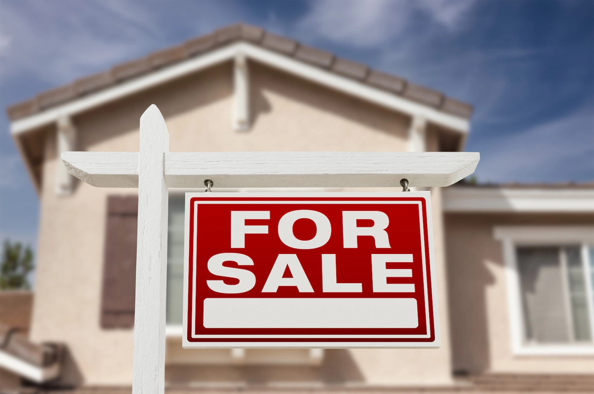

If you’re facing foreclosure, you may feel like no one understands, but you’re not alone. In fact, there’s over 3,000 properties in Iowa in some stage of foreclosure. As the foreclosure process progresses, you have fewer options available, which is why taking action early is important. The good news is that you have around 120 days from the start of your missed payments to find a solution. To sell house in pre foreclosure Dubuque residents must take the correct steps to ensure the process is done legally and to avoid credit damage. Let’s explore your selling options and address important considerations for Dubuque properties you should keep in mind.
The short answer is yes, in Dubuque, you can sell a house in pre-foreclosure if you feel you cannot make up the missing payments or continue paying off the mortgage. A common question among homeowners is, “How far into the pre-foreclosure process can you list your house?” The sooner the better; if you know you’re heading toward foreclosure, you can actually sell your property after the first missed payment.
However, before you rush into anything, it’s important to reach out to your lender to see if you can come to an agreement or find a solution that works for both of you. Many lenders are willing to work with you to help you keep your home, so selling doesn’t have to be your first option. If, after exploring all of your options, you decide selling is the right choice, you need to inform your lender of your intent to sell.
Many times, this notification can pause foreclosure proceedings, giving you more time to list your property. Be sure to ask for the exact payoff amount, including all fees, so you know how much you owe. You’ll then need to get a comparative market analysis (CMA) or appraisal on the house to determine its market value. Once you know your outstanding balance and what your house is worth, it’s time to decide on a sales strategy.
Avoid the pain of foreclosure and sell your house quickly for fair market value—call Dubuque Home Buyers at 563.227.8157 today.
When it’s time to sell house in pre foreclosure Dubuque residents have three options: traditional sale, short sale, and a cash sale.
Selling a pre-foreclosure house on the traditional market requires a knowledgeable realtor with experience in foreclosure properties. This option can often bring in the highest returns, but it can take time, which you may not have if your lender doesn’t halt the foreclosure proceedings. With a traditional sale, the realtor will appraise your property and list it at a price comparable to nearby sales. You may be responsible for making repairs, cleaning, staging, and getting the house ready for potential buyers. When combined with the realtor fees, traditional sales can be pricey and time-consuming, so be sure to keep that in mind when considering this option.
A short sale is when a homeowner sells a house for less than their remaining mortgage payment. Since the sale doesn’t cover the full balance of the mortgage, the lender must agree beforehand to forgive the difference and accept the lesser amount. In Dubuque, you need to get a deficiency waiver in writing in your short sale approval documents from your lender, or you could be liable to pay the difference in the sale price and mortgage balance. While a short sale causes less damage to your credit score, it may still be considered taxable income by the IRS, so be sure to consult with a tax professional if you choose this option.
If you want to sell your house quickly without worrying about making repairs, paying realtor fees, or dealing with long market sell times, a cash sale is a great option. You sell your house “as-is,” and the process generally only takes a few weeks to a month to complete. It’s important to make sure you use a reputable company that offers fair market value so you can get the highest return possible. Cash sales are popular since they’re fast, helping you close the door on the foreclosure process quickly.
Pre-foreclosure can be overwhelming, but it’s important to keep these considerations in mind to help you avoid costly mistakes.
Before selling your house, try to negotiate with the lender to see if they could refinance the loan at a lower payment or set up a hardship case. These options may give you time to catch up on payments and keep your home.
When you make a deal with your lender, whether it’s to accept a short sale, make payment arrangements, or regarding the intent to sell, be sure to get all agreements in writing to protect yourself. Iowa law allows for deficiency judgments, which means you could be responsible for paying back any balance that the sale of your house doesn’t cover. By getting your agreements in writing, you have legal protection and peace of mind.
If you’ve missed payments on your mortgage, it’s important to reach out to your lender as soon as possible. If the property goes into foreclosure, you no longer have the option to sell, so acting quickly can make all the difference.
When it’s time to sell house in pre foreclosure Dubuque residents trust Dubuque Home Buyers. We offer fair market value, with no commission, or repairs needed, and close in as little as 10 days. Our simple three-step process is fast, so you can breathe easy. Contact Dubuque Home Buyers today at 563.227.8157 and get your no-obligation cash offer!
Disclaimer - This article is for informational purposes only and should not be considered legal, financial, or real estate advice. Homeowners dealing with foreclosure or probate situations should consult with a qualified attorney, financial advisor, or housing counselor to understand their options. Dubuque Home Buyers is a real estate investment company and does not provide legal or financial services.
Get a free, no-obligation cash offer today. No repairs, no commissions, close on your timeline.
Get My Free Cash Offer 📞 Call or Text (563) 227-8157